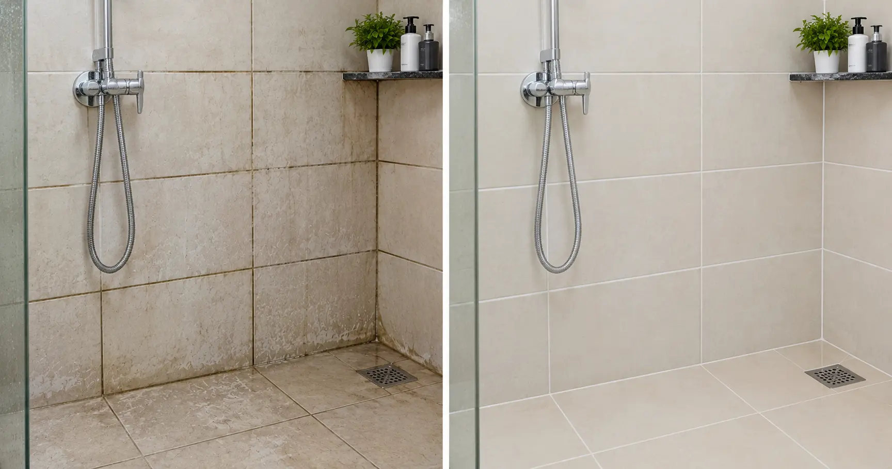

Deep tile cleaning is enough when tiles look dull because of dirt, soap scum, wax build-up, hard-water scale or dirty grout. Tile polishing is needed only when the tile surface itself is worn or scratched, and only some tiles can be polished. Glazed ceramic tiles cannot.
Not Sure What Your Tiles Need?
Send photos so the EFCS team can help you understand whether cleaning or polishing may be suitable.
WhatsApp Photos of Your Tiles Call EFCS Now: +91 89043 12966 Book a Tile Check1. Tile Cleaning vs Tile Polishing: What Is the Difference?
Tile cleaning removes dirt, grime, soap residue, hard-water deposits and other build-up from the tile surface and grout. Tile polishing is a surface-refinishing process used only on suitable materials when wear or scratches have affected the finish. They are different services and are not interchangeable.
If a floor looks dull, start by checking whether residue or staining is causing the problem. A professional professional tiles deep cleaning service may be enough. Polishing should be considered only after the tile material and finish are identified.
| Feature | Tile deep cleaning | Tile polishing |
|---|---|---|
| Main purpose | Remove dirt, stains, residue and grime | Refinish a suitable worn or scratched surface |
| Grout | Can clean grout and remove surface build-up | Does not replace grout cleaning or repairs |
| Suitable for | Many tile types, with the correct cleaner and method | Only tile and stone types that can safely be refinished |
| Glazed ceramic tiles | Usually the appropriate maintenance approach | Cannot be ground and polished without damaging the glaze |
2. When Are Tiles Likely to Need Deep Cleaning?
- Tiles look dull after regular mopping.
- Bathroom floors have soap scum or hard-water deposits.
- Grout lines look darker than before.
- The floor feels sticky because of cleaner or wax residue.
- Kitchen or entrance tiles have accumulated grease and everyday dirt.
Use a tile-safe cleaning method matched to the material. For more information, see EFCS one-time deep cleaning services.
3. Which Tiles Can Be Polished?
Polishing suitability depends on the material, surface finish, wear and previous treatments. Mosaic, terrazzo and some natural-stone floors can often be refinished by trained professionals. Some through-body tiles may be suitable after assessment. Glazed ceramic and glazed vitrified tiles should not be ground as if they were solid stone; damaging the glaze can permanently change their appearance.
Learn about EFCS mosaic polishing service and read the floor polish comparison guide before deciding.
| Floor material or finish | General guidance | Important note |
|---|---|---|
| Glazed ceramic tile | Clean; do not grind-polish the glaze | Grinding can destroy the finished surface |
| Glazed vitrified tile | Usually clean rather than mechanically polish | Confirm the exact product and finish |
| Mosaic or terrazzo | May be suitable for professional polishing | Requires material and condition assessment |
| Natural stone | May be refinished using a stone-appropriate method | Acid sensitivity and previous treatments matter |
| Through-body tile | May be suitable in some cases | Confirm the tile construction and manufacturer's guidance |
4. Why Do Tiles Still Look Dull After Mopping?
Routine mopping may spread dirt, soap, detergent or floor-cleaner residue rather than remove it completely. Hard-water scale and wax build-up can also make a floor appear cloudy. A correctly selected deep-cleaning method can remove suitable surface deposits. If a clean test patch remains dull, the finish may be worn or damaged and needs further assessment.
Grout issues can also affect how clean a tiled floor looks. Read more about why grouting problems happen.
5. Acid Wash: Important Safety Warnings
Acid wash is not a universal tile-cleaning solution. The wrong chemical or concentration can permanently damage a floor.
- Acid may damage or dull certain tile finishes and can attack grout and metal fittings.
- Never use acid cleaners on marble, limestone, travertine or terrazzo unless a qualified stone-care professional has confirmed a safe, material-specific method. These materials are acid-sensitive and can be permanently etched.
- Do not assume that a product safe for one tile is safe for another.
- Use only a product suitable for the identified surface and follow its label.
- Test an inconspicuous patch first and protect nearby fittings.
- Never mix bleach with acid cleaners or other cleaning chemicals.
- Rinse as directed, ventilate the area and use appropriate protective equipment.
- If you cannot identify the tile material, seek professional advice before using an acid product.
For natural stone, read why natural stone does not always polish evenly and the marble restoration and polishing guide.
Still Unsure? Let Us Check the Surface
Share clear photos of the tiles and grout before choosing a cleaning or polishing method.
Not Sure? Send Your Tile Photos on WhatsApp Call +91 88480 722246. How to Clean Old Bathroom Tiles and Grout
Start with a cleaner labelled as suitable for your tile and grout. Use a soft brush where appropriate, follow the product directions and rinse thoroughly. Choose a product specifically intended for soap scum or hard-water scale when needed, after checking material compatibility. Avoid abrasive tools that may scratch the finish. Persistent stains, damaged grout or suspected surface etching may need professional assessment.

For related maintenance advice, see terrazzo floor polishing and care and why a newly renovated bathroom still smells.
7. Common Tile-Care Mistakes to Avoid
- Polishing a tile before identifying its material and finish.
- Using acid on a surface that may be acid-sensitive.
- Mixing cleaning chemicals, especially bleach and acid.
- Using abrasive pads that can scratch a glazed finish.
- Assuming dark grout always means the tile needs polishing.
- Applying wax or polish without confirming compatibility with the floor.
Need Help With Tile and Grout Care?
Ask EFCS about a suitable cleaning approach for your floor in Bangalore.
Book a Tile Deep Cleaning WhatsApp Us8. Frequently Asked Questions
What is the difference between tile cleaning and tile polishing?
Tile cleaning removes dirt, residue, stains and scale from the surface and the grout, and it does not change the tile itself. Tile polishing grinds and refinishes the surface of a tile that is worn, scratched or dull. Cleaning is the first step. Polishing is needed only if the tile is still dull after a proper deep clean.
Can glazed ceramic tiles be polished?
No. Glazed ceramic tiles have a thin glass-like layer on top, and it cannot be ground or polished without destroying the finish. These tiles should be deep cleaned, not polished. If a glazed tile has lost its shine, a proper deep clean is the most you can safely do.
Is acid wash safe for tiles?
It depends on the tile and on how the acid is used. A properly diluted acid wash can remove cement haze and hard-water scale from some hard tiles. Acid can also dull the glaze, damage grout and metal fittings, and permanently etch marble, limestone, travertine and terrazzo. It should be done only after a test patch, by someone who knows the tile type.
Why do my tiles still look dull after mopping?
Everyday mopping often spreads a thin film of dirt, soap, detergent or floor-cleaner residue over the tile. Hard-water scale and wax build-up cause the same look. A deep clean with the right cleaner and machine removes this film. If the shine does not return on a cleaned test patch, the tile surface itself may be worn.
How do I clean old bathroom tiles and grout?
Start with a neutral or tile-safe bathroom tiles cleaner and a soft brush. For scale and soap scum, use a product made for that purpose and follow the label. Never mix bleach with an acid cleaner. Rinse well, ventilate the room and test any new product on a hidden patch. Heavy staining or black grout usually needs a professional deep clean.
Can old tiles be polished?
Sometimes. Old mosaic, terrazzo and natural stone floors are routinely ground and polished, and some through-body tiles can be refinished. Glazed ceramic and glazed vitrified tiles cannot. Whether an old tile can be polished depends on its type and how much usable surface is left, so it needs a site check or clear photos.
How often should tiles be deep cleaned?
It depends on traffic, water quality and the room. Bathrooms, kitchens and entrances get dirty faster than bedrooms. Many homes find a professional deep clean useful about once a year, or sooner if grout darkens, a film appears or the floor feels sticky or slippery.
Does EFCS offer tile cleaning services in Bangalore?
Yes. Our one-time deep cleaning team cleans tiles and grout in homes and offices in Bangalore. Send photos on WhatsApp and we will tell you whether cleaning is enough or whether the floor needs polishing before you book.
Ask EFCS About Your Tiles
Share photos or contact our team to discuss your tile-cleaning or polishing enquiry.
WhatsApp EFCS Call +91 89043 12966 Email EFCS Book Now